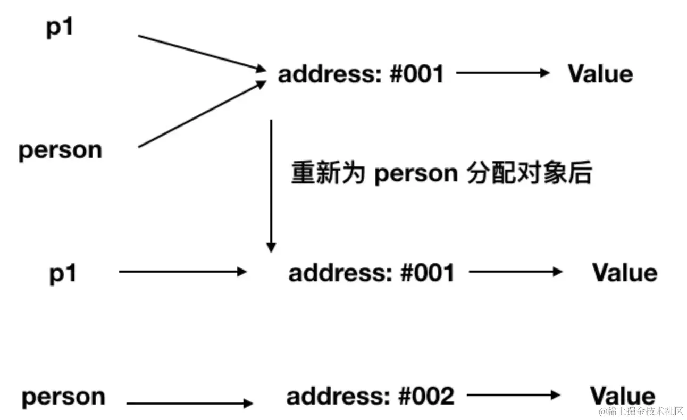
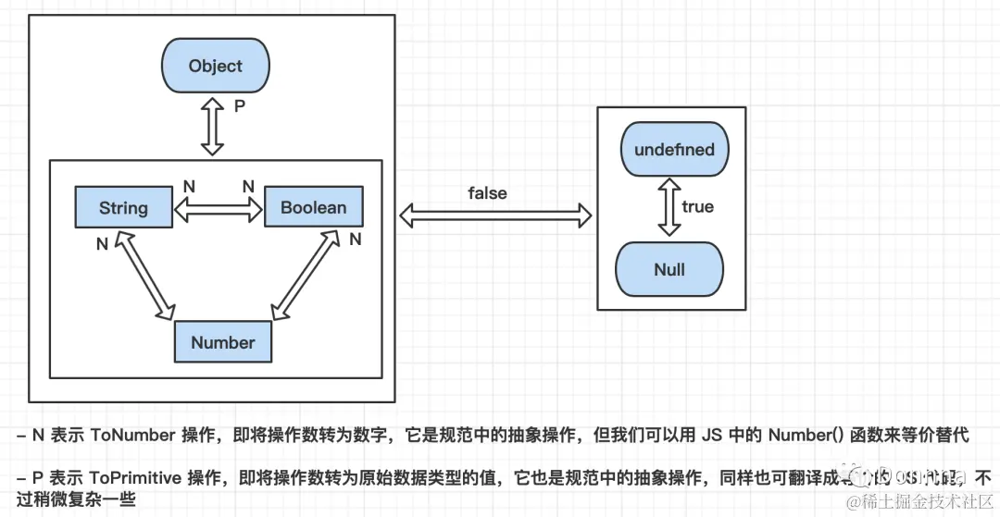

JavaScript 基础 - 数据类型、运算符、类型转换
数据类型
原始（Primitive）类型
原始（Primitive）值一般叫做栈数据（一旦开了个房间、不可能在这个房间里对其进行修改）
在 JS 中，存在着以下几种原始值，分别是：
number（typeof 1 === "number"）string（typeof '' === "string"）boolean（typeof true === "boolean"）null（typeof null === "object"）undefined（typeof undefined === "undefined"）symbol（typeof Symbol() === "symbol"）bigInt（typeof 10n === "bigint"）(没有正式发布但即将被加入标准的原始类型)
原始类型存储的都是值，是没有函数可以调用的，如 undefined.toString() 会报错，一般看到的 '1'.toString() 可以调用成功是因为实际上它已经被强制转换成了 String 类型即对象类型，所以才可以调用 toString 函数

undefined 和 null 的区别
相同点：用 if 判断时两者都会被转换成 false
不同点：
number转换的值不同1
2Number(null); // 0
Number(undefined); // NaNnull有值，但这个值是空值，表示为空，代表此处不应该有值的存在。一个对象可以是null代表是个空对象，null一般用作占位undefined是未定义，表示不存在，完全没有值的意思。JavaScript是一⻔动态类型语言，成员除了表示存在的空值外还有可能根本就不存在(因为存不存在只在运行期才知道)，这就是undefined的意义所在
typeof null 的结果为什么是 object
typeof null 会输出 object，这是 JS 存在的一个悠久 Bug，在 JS 的最初版本中使用的是 32 位系统，为了性能考虑使用低位存储变量的类型信息，000 开头代表是对象，然而 null 表示为全零，所以将它错误的判断为 object
为什么 0.1 + 0.2 !== 0.3？
如何判断一个数据是 NaN？
NaN 是非数字，但使用 typeof 检测是 number 类型
1 | typeof(NaN); // 'number' |
判断一个数据是 NaN 的方法如下：
- 利用
NaN的定义：用typeof检测是否是number类型且判断是否满足isNaN - 利用
NaN是唯一一个不等于任何自身的特点n !== n - 利用
ES6中提供的Object.is()方法，判断两个值是否相等n == NaN
为什么会有 BigInt 的提案？
JavaScript 中 Number.MAX_SAFE_INTEGER 表示最大安全数字，计算结果是 9007199254740991，即在这个数范围内不会出现精度丢失(小数除外)
但一旦超过这个范围，JS 就会出现计算不准确的情况，这在大数计算时不得不依靠一些第三方库进行解决，因此官方提出了 BigInt 来解决此问题
BigInt 类型可以用任意精度表示整数，使用 BigInt 可以安全地存储和操作大整数，甚至可以超过数字的安全整数限制，BigInt 是通过在整数末尾附加 n 或调用构造函数来创建的
引用类型
一般叫做堆数据，包括：
- 对象(
Object)（typeof {} === "object"） - 数组(
Array)（typeof [] === "object"） - 函数(
Function)（typeof function(){} === "function"）
引用类型与原始类型的区别：
因为原始值是存放在栈里的，而引用值是存放在堆里的，原始值不可以被改变，引用值可以被改变
原始值的赋值是把值的内容赋值一份给另一个变量，栈内存一旦被赋值了就不可以改变，即使给
num重新赋值为234，也是在栈里重新开辟了一块空间赋值234，然后把num指向了这个空间，前面那个存放123的空间还存在但引用值却不是这样：
引用值的变量名存在栈里，但值却是存在堆里，栈里的变量名只是个指针并指向了一个堆空间，这个堆空间存的是一开始赋的值，当arr1 = arr时，其实是把arr1指向了和arr指向的同一个堆空间，这样当改变arr的内容时，就改变了这个堆空间的内容，自然同样指向这个堆空间的arr1的值也随着改变1
2
3
4
5
6
7
8
9
10
11// num的改变对num1完全没有影响
var num = 123, num1 = num;
num = 234;
console.log(num) // 234
console.log(num1) // 123
// 只是改变了 arr 的值，但 arr1 也跟着改变了
var arr = [1,2,3], arr1 = arr;
arr.push(4)
console.log(arr) // [1,2,3,4]
console.log(arr1) // [1,2,3,4]再来看个函数参数是对象的情况
1
2
3
4
5
6
7
8
9
10
11
12
13
14
15function test(person) {
person.age = 26
person = {
name: 'yyy',
age: 30
}
return person
}
const p1 = {
name: 'yck',
age: 25
}
const p2 = test(p1)
console.log(p1) // {name: "yck", age: 26}
console.log(p2) // {name: "yyy", age: 30}- 上面代码中，首先函数传参是传递对象指针的副本
- 到函数内部修改参数的属性这步，当前
p1的值也被修改了 - 但当重新为
person分配了一个对象时就出现了分歧，请看下图，所以最后person拥有了一个新的地址（指针），即和p1没有任何关系，导致了最终两个变量的值是不相同的

无法直接操纵堆中的数据，即无法直接操纵对象，但可通过栈中对对象的引用来操作对象，就像通过遥控机操作电视机一样，区别在于这个电视机本身并没有控制按钮
为什么要区分堆栈？
变量的主要形式：
- 一种内容短小（如
int整数），需频繁访问，但生命周期很短，通常只在一个方法内存活- 一种内容可能很多（如很长一段字符串），可能不需太频繁的访问，生命周期较长，通常很多方法中可能都要用到
堆区就是各种慢：申请内存慢、访问慢、修改慢、释放慢、整理慢（或说GC垃圾回收机制），但优点不言而喻：访问随机灵活、空间超大、在不超可用内存的情况下要多大就给多大
栈区速度超快，但缺点如生命周期短，一般只能在一个方法内存活；需事先知道需要多大的栈（事实上绝大多数语言栈区要分配的大小在编译期就确定了，如Java），通常最大栈区可用内存都很小，不可能往栈区堆很多数据
不将原始类型放在堆是因为是为了不影响栈的效率，且通过引用到堆中查找实际对象是要花费时间的，而这个综合成本远大于直接从栈中取得实际值的成本，所以原始类型值直接存放在栈中
堆和栈分别是不同的数据结构：
- 栈是线性表的一种
- 堆则是树形结构
运算符
算术运算符（算术运算符的优先级是从左到右的）
+：数学上的相加功能、拼接字符串（字符串和任何数据相加都会变成字符串）–/*///%：分别对应数学上的相减、相乘、相除、取余功能=：赋值运算符，优先级最低()：和数学上一样，加括号的部分优先级最高++：自加1运算，当写在变量前时是先自加1再执行运算，写在变量后时是先运算再自加1--：用法和++一样，不过是减法操作+=：让变量自加多少- 相同的还有
-=、/=、*-、%=等
比较运算符
比较运算符有 >、<、>=、<=、!=、== 不严格等于、=== 严格等于
== 和 === 的区别：当比较两个数据时，是否先转化成同一个类型的数据后再进行比较
==即这两个数据进行了类型转换后值相等则相等===则是两个数据不进行数据转化也相等时则相等
注：
NaN不等于任何数据包括它本身，null和undefined就等于它本身
逻辑运算符
逻辑运算符主要是 与(&&) 和 或（||)
&&：只有是true时才会继续往后执行，一旦第一个表达式错了，后面的第二个表达式根本不执行；若表达式的返回结果都是true则这里&&的返回结果是最后一个正确的表达式的结果||：只要有一个表达式是true则结束，后面的就不走了且返回的结果是这个正确的表达式的结果，若都是false则返回结果就是false
一般来说，&& 有当做短路语句的作用，因为运算符的运算特点，只有第一个条件成立时才会运行第二个表达式，所以可以把简单的 if 语句用 && 来表现出来
一般来说，|| 有当做赋初值的作用，有时希望函数参数有一个初始值，在不使用 ES6 的语法的情况下，最好的做法就是利用 || 语句
注意：这里有一个缺点，当传的参数是一个布尔值且传的是 false，则 || 语句的特点就会忽略掉所传的这个参数值而去赋成默认的初始值，所以为了解决这个弊端，就需利用 ES6 的一些知识
默认为
false的值：undefined、null、" "、0、-0、false、NaN
类型转换
显示类型转换
typeof 能返回的类型一共有：numner、string、boolean、undefined、symbol、bigInt、object、function
数组和null的都返回"object"NaN属于number类型：虽然是非数，但非数也是数字的一种Number(mix)：该方法可以把其他类型的数据转换成数字类型的数据parseInt(string, radix)：该方法是将字符串转换成整型数字类型的- 第二个参数
radix是可选择的参数 - 当
string里既包括数字又包括其他字符时会从左到右只会转换数字部分，遇到其他非数字的字符就停止，即使后面还有数字也不会继续转换 - 当
radix不为空时，该函数可用来作为进制转换，radix作用则是把第一个参数的数字当成几进制的数字来转换成十进制（radix参数的范围是2 ~ 36）
1
2// String(100000000000000000000000) -> "1e+23"
parseInt(100000000000000000000000); // 1- 第二个参数
parseFloat(string, radix)：这个方法和parseInt类似，将字符串转换成浮点类型的数字，同样是碰到第一个非数字型字符停止- 由于浮点型数据有小数点，它会识别第一个小数点以及后面的数字，但第二个小数点则无法识别
- 一旦数字变得足够大，其字符串表示将以指数形式呈现。如下，此时得到的是
1
1
parseFloat(100000000000000000000000); // 1e+23
toString(radix)：它是对象上的方法，任何数据类型都可使用，转换成字符串类型- 同样
radix基底是可选参数，当为空时仅仅代表将数据转化成字符串 - 当写了
radix基底时则代表要将这个数字转化成几进制的数字型字符串
注意：
undefined和null没有toString方法- 同样
String(mix)：把任何类型转换成字符串类型Boolean(mix)：把任何类型转换成布尔类型
隐式类型转换
isNaN()
这个方法可以检测数据是不是非数类型，这中间隐含了一个隐式转换，先将传的参数调用 Number 方法，再看结果是不是 NaN，该方法可以检测 NaN 本身
1 | isNaN(NaN); // true |
算术运算符
++ n：先将数据调一遍 Number 后，再自加 n
n ++：虽然是执行完后才自加 n，但执行前就调用 Number 进行类型转换
同样一目运算符也可以进行类型转换：+、-、*、/` 在执行前都会先转换成数字类型再进行运算
逻辑运算符
逻辑运算符也会隐式调用类型转换
&&和||都是先把表达式调用Boolean换成布尔值再进行判断，不过返回的结果还是本身表达式的结果!取反操作符返回的结果也是调用Boolean方法后的结果
转
Boolean：在条件判断时除了undefined，null，false，NaN，''，0，-0，其他所有值都转为true，包括所有对象
转换规则
| 原始值 | 转换为数值 | 转换为字符串 | 转换为布尔值 |
|---|---|---|---|
| number | / | 0 -> “0”，5 -> “5” | 除了 0、-0、NaN 外均为 true |
| string | “” -> 0，”1” -> 1，”a” -> NaN | / | 除了空字符串均为 true |
| undefined | NaN | “undefined” | false |
| null | 0 | “null” | false |
| [] | 0 | “” | true |
| [10,20] | NaN | “10,20” | true |
| {} | NaN | “[object, Object]” | true |
| {a: 1} | NaN | “[object, Object]” | true |
| function(){} | NaN | “function(){}” | true |
| true | 1 | “true” | true |
| false | 0 | “false” | false |
| Symbol | NaN | “function Symbol(){[native code]}” | true |
| Symbol() | 抛错 | “Symbol()” | true |
引用类型转换为原始类型
[[ToPrimitive]]
引用类型在转换类型时会调用内置的 [[ToPrimitive]] 函数
ToPrimitive(obj, preferredType)：
JS引擎内部转换为原始值，该函数接受两个参数obj为被转换的对象preferredType为希望转换成的类型（默认为空，接受的值为Number或String）
注意：在执行时若第二个参数为空且
obj为Date的实例时，此时preferredType会被设置为String，其他情况下preferredType会被设置为Number若没有提供这个值即预设情况，则会被设置转换的
hint值为default，这个首选的转换原始类型的指示(hint值)，是在作内部转换时由JS视情况自动加上的，一般情况就是预设值
对象发生到基本类型值的转换时，会按照下面的逻辑调用对象上的方法：
若存在
obj[Symbol.toPrimitive]，则先调用obj[Symbol.toPrimitive]否则按下面规则来：
若
preferredType为Number，ToPrimitive执行过程如下：- 若
obj为原始值，直接返回 - 否则调用
obj.valueOf()，若执行结果是原始值则返回 - 否则调用
obj.toString()，若执行结果是原始值则返回 - 否则，抛出
TypeError错误
若
preferredType为String，将上面的第2步和第3步调换，即：- 若
obj为原始值，直接返回 - 否则调用
obj.toString()，若执行结果是原始值则返回 - 否则调用
obj.valueOf()，若执行结果是原始值则返回 - 否则，抛出
TypeError错误
PreferredType没提供时即hint为default时，此时与PreferredType为数字Number时的步骤相同- 若
Symbol.toPrimitive
Symbol.toPrimitive 是一个内置的 Symbol 值，它是作为对象的函数值属性存在的，当一个对象转换为对应的原始值时，会调用此函数
该函数被调用时会被传递一个字符串参数 hint，表示要转换到的原始值的预期类型。hint 参数的取值是 "number"、"string" 和 "default" 中的任意一个
注意：
Symbol.toPrimitive在类型转换方面优先级是最高的
1 | // 示例 1 |
valueOf 与 toString 方法
在 JS 的 Object 原型的设计中，一定会有 valueOf 与 toString 方法，所以这两个方法在所有对象里都会有，不过它们在转换过程中有可能会交换被调用的顺序
对于原始类型数据，toString 及 valueOf 方法的使用
1 | const str = "hello", n = 123, bool = true; |
toString方法对于原始类型数据而言，其效果相当于类型转换，将原始类型转为字符串valueOf方法对于原始类型数据而言，其效果将相当于返回原数据
复合对象类型数据使用 toString 及 valueOf 方法：
1 | var obj = {}; |
综合案例
1 | const test = { |
toString() 和 String() 的区别
它们都可以转换为字符串类型，区别如下：
toString()
toString()可将所有的数据都转换为字符串，但要排除null和undefined，null和undefined调用toString()方法会报错若当前数据为数字类型，则
toString()括号中可以写一个数字代表进制，可以将数字转化为对应进制的字符串
1 | var num = 123; |
String()
String()可以将null和undefined转换为字符串，但没法转进制字符串
注意下面两点：
Symbol.toPrimitive和toString方法的返回值必须是基本类型值；valueOf方法除了可以返回基本类型值，也可以返回其他类型值- 数字其实是预设的首选类型，即在一般情况下加号运算中的对象要作转型时都是先调用
valueOf再调用toString
== 运算规则
1 | // 常规 |
总结：
undefined == null，结果是true且它俩与所有其他值比较的结果都是false（undefined和null是一对特殊的值，它们不会被自动转换成布尔值进行比较）NaN不等于任何包括自身String == Boolean，需两个操作数同时转为NumberString/Boolean == Number，需String/Boolean转为NumberObject == Primitive，需Object转为Primitive（具体通过valueOf和toString方法）

对 == 两边的值认真推敲，以下两个原则可以有效地避免出错，这时最好用 === 来避免不经意的强制类型转换
- 若两边的值中有
true或false，千万不要使用== - 若两边的值中有
[]、""或0，尽量不要使用==
==、=== 和 Object.is() 的区别
==：等于，===：严格等于，Object.is()：加强版严格等于
1 | const a = 3; |
=== 这个比较简单，只需利用下面的规则来判断两个值是否恒等
- 若类型不同，就不相等
- 若两个都是数值且是同一个值则相等，有一个是
NaN就不相等 - 若两个都是字符串且每个位置的字符都一样则相等，否则不相等
- 若两个值都是同样的
Boolean值则相等 - 若两个值都引用同一个对象或函数则相等，即两个对象的物理地址也须保持一致，否则不相等
- 若两个值都是
null或都是undefined则相等
Object.is() 其行为与 === 基本一致，不过有两处不同：
+0不等于-0NaN等于自身
1 | +0 === -0 // true |
Object.is()在严格等于的基础上修复了一些特殊情况下的失误，即+0和-0，NaN和NaN
模拟实现 Object.is()
1 | function objectIs(x, y) { |
扩展
JS 对于 Object 与 Array 的设计
在 JS 中所设计的 Object 纯对象类型的 valueOf 与 toString 方法，它们的返回如下：
valueOf方法：对象本身toString方法："[object Object]"字符串值，不同的内建对象的返回值是"[object type]"字符串type指的是对象本身的类型识别，如Math对象是返回"[object Math]"字符串- 但有些内置对象因为覆盖了这个方法，所以直接调用时不是这种值（注意：这个返回字符串的前面的
"object"开头英文是小写，后面开头英文是大写）
因此可利用 Object 中的 toString 来进行各种不同对象进行判断，这在以前 JS 能用的函数库或方法不多的年代经常看到，不过它需要配合使用函数中的 call 方法才能输出正确的对象类型值，如：
1 | Object.prototype.toString.call([]); // "[object Array]" |
对象的这两个方法均可被覆盖，可用下面的代码来观察这两个方法的运行顺序，下面这个都是先调用 valueOf 的情况：
1 | let obj = { |
先调用 toString 的情况比较少见，大概只有 Date 对象或强制要转换为字符串时才会看到：
1 | let obj = { |
而下面这个例子会造成错误，因为不论顺序如何都得不到原始数据类型的值，错误消息是TypeError: Cannot convert object to primitive value，从这个消息中可以得知它这里面会需要转换对象到原始数据类型：
1 | let obj = { |
数组 Array 很常用，虽然它是个对象类型，但它与 Object 的设计不同，它的 toString 有覆盖，说明一下数组的 valueOf 与 toString 的两个方法的返回值：
valueOf方法：对象本身（与Object一样）toString方法：相当于用数组值调用join(',')所返回的字符串，即[1,2,3].toString()会是"1,2,3"，这点要特别注意
Function 对象很少会用到，它的 toString 也有被覆盖，所以并不是 Object 中的那个 toString，Function 对象的 valueOf 与 toString 的两个方法的返回值：
valueOf方法：对象本身（与Object一样）toString方法：函数中包含的代码转为字符串值
{} + [] 的结果是什么？
详见：JS 的 {} + {} 与 {} + [] 的结果是什么？